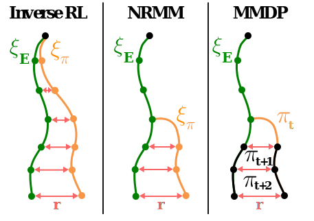
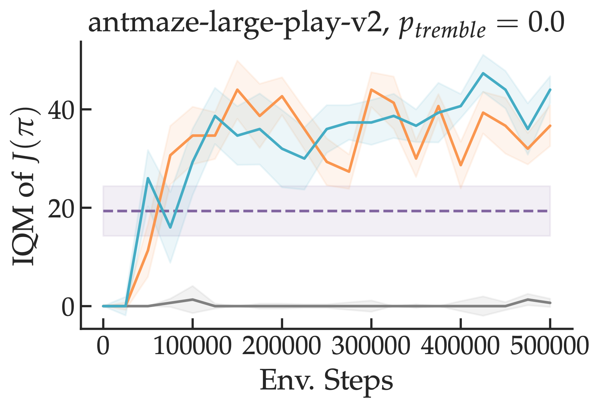

without Reinforcement Learning

Inverse reinforcement learning approaches reduce the problem of imitation learning to repeatedly solving a computationally expensive reinforcement learning problem. We prove and empirically validate that resetting the learner to states from the expert's state distribution during the reinforcement learning subroutine allows us match expert performance exponentially faster.
Abstract
Inverse Reinforcement Learning (IRL) is a powerful set of techniques for imitation learning that aims to learn a reward function that rationalizes expert demonstrations. Unfortunately, traditional IRL methods suffer from a computational weakness: they require repeatedly solving a hard reinforcement learning (RL) problem as a subroutine. This is counter-intuitive from the viewpoint of reductions: we have reduced the easier problem of imitation learning to repeatedly solving the harder problem of RL. Another thread of work has proved that access to the side-information of the distribution of states where a strong policy spends time can dramatically reduce the sample and computational complexities of solving an RL problem. In this work, we demonstrate for the first time a more informed imitation learning reduction where we utilize the state distribution of the expert to alleviate the global exploration component of the RL subroutine, providing an exponential speedup in theory. In practice, we find that we are able to significantly speed up the prior art on continuous control tasks.
Video
Key Insights
1. Inverse RL is Slow Because of RL
Usually in inverse RL, an adversary picks a reward function that maximally distinguishes learner and expert samples in an outer loop and the learner optimizes this reward function in the inner loop via reinforcement learning. While inverse RL comes with strong guaratees w.r.t. compounding errors, each inner loop iteration requires solving a problem that could take a number of interactions with the environment that is exponential in the task horizon. For example, if the learner is operating in a tree structured MDP and the adversary picks a reward function that is 0 everywhere except for one of the leaf nodes, the learner needs to explore the entire tree in every inner loop iteration.
2. Expert Resets Can Speed Up RL
The reduction of imitation learning to repeated reinforcement learning is ignoring a key piece of information: given our goal is to imitate the expert, the learner should only have to compete against policies with similar visitation distributions to that of the expert. A simple way to implement this insight is to change the learner's start-state distribution to be the expert's visitation distribution during reinforcement learning. This makes it so that the learner wastes fewer environment interactions exploring parts of the state space that the expert never visits. We prove that doing so allows us to derive the first polynomial time algorithms for inverse RL, an exponential speedup. We call them MMDP (moment-matching by dynamic programming) and NRMM (no-regret moment matching).
3. Interpolated Practical Procedure
However, in the worst case, performing expert resets can introduce compounding errors (though in far fewer circumstances than a completely offline approach like behavioral cloning). To hedge against this possibility, we propose interpolating (either over the course of training or within a single policy optimization step) between standard inverse RL and one of our algorithms. Interpolation allows the learner to quickly settle on a roughly correct policy and the fine-tune it via RL. We call these interpolated approaches FILTER (fast inverted loop training via expert resets).
In practice, we observe a remarkable speedup on problems on which exploration is hard (e.g. mazes) -- compare our approaches in teal/orange to standard inverse RL in grey.
We also see moderate speedups on tasks like locomotion. Importantly, this strategy can be combined with any off-the-shelf IRL approach for faster learning. We release all of our code at the link below.
[Code]
Paper

Inverse Reinforcement Learning without Reinforcement Learning
Gokul Swamy, David Wu, Sanjiban Choudhury, J. Andrew Bagnell, Zhiwei Steven Wu
@misc{swamy2023inverse,
title = {Inverse Reinforcement Learning without Reinforcement Learning},
author = {Gokul Swamy and David Wu and Sanjiban Choudhury and J. Andrew Bagnell and Zhiwei Steven Wu},
year = {2023},
booktitle = {International Conference on Machine Learning},
}Acknowledgements
This template was originally made by Phillip Isola and Richard Zhang for a colorful ECCV project, and adapted to be mobile responsive by Jason Zhang. The code we built on can be found here.